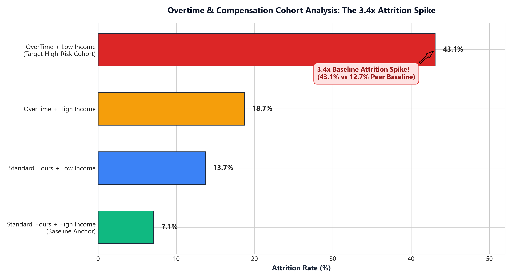

-- Sample Star Schema Query: High-Risk Cohort Identification
SELECT d.DepartmentName, r.JobRoleTitle,
COUNT(f.EmployeeID) AS TotalHeadcount,
ROUND(AVG(f.AttritionPredictedProb) * 100, 1) AS AvgFlightRiskPct
FROM FactEmployeeRetention f
JOIN DimDepartment d ON f.DepartmentKey = d.DepartmentKey
JOIN DimJobRole r ON f.JobRoleKey = r.JobRoleKey
WHERE f.OverTimeFlag = 1 AND f.MonthlyIncome < 4919
GROUP BY 1, 2 ORDER BY AvgFlightRiskPct DESC;
SELECT d.DepartmentName, r.JobRoleTitle,
COUNT(f.EmployeeID) AS TotalHeadcount,
ROUND(AVG(f.AttritionPredictedProb) * 100, 1) AS AvgFlightRiskPct
FROM FactEmployeeRetention f
JOIN DimDepartment d ON f.DepartmentKey = d.DepartmentKey
JOIN DimJobRole r ON f.JobRoleKey = r.JobRoleKey
WHERE f.OverTimeFlag = 1 AND f.MonthlyIncome < 4919
GROUP BY 1, 2 ORDER BY AvgFlightRiskPct DESC;
Case Study 01 · People Analytics
Employee Attrition Risk Intelligence Dashboard
Enterprise employee retention system evaluating 1,470 employees. Discovered that employees working overtime who earn below median income experience a 3.40× empirical risk surge (43.1% departure rate vs 12.7% baseline peers). Above-median pay cuts overtime departure down to 24.7%, acting as a 43% attrition buffer.
86.05%
Holdout Acc
0.84
ROC-AUC
3.40×
Risk Spike